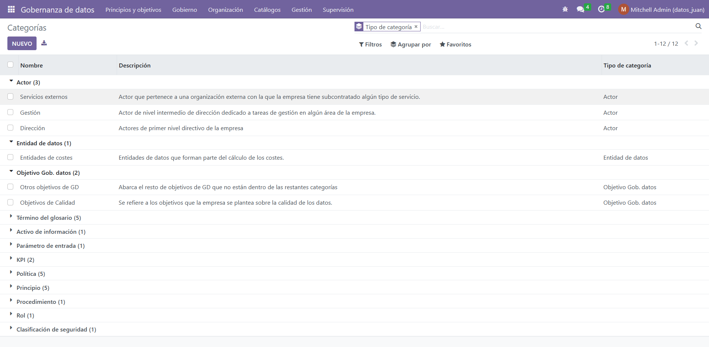
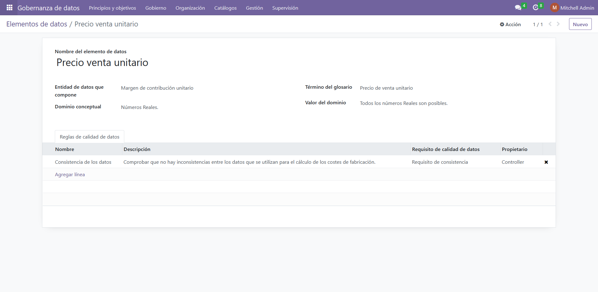

Data Governance
Define a Data Governance framework for your organization.

Defined data governance framework
The module relies on a solid Data Governance framework, which has been accepted by researchers.

Manage your Data Governance framework
Query the existing elements, with custom filters, groupings and text search.
Get all the details of an element or add a new one with a form view.
Export all your entities to Excel with a single click.
The module only has a Spanish version in its current state.
The Data Governance module has been developed within the University of Cantabria as part of a Final Degree Project.
Specifically, it has been built with the Real-Time and Software Engineering research group.